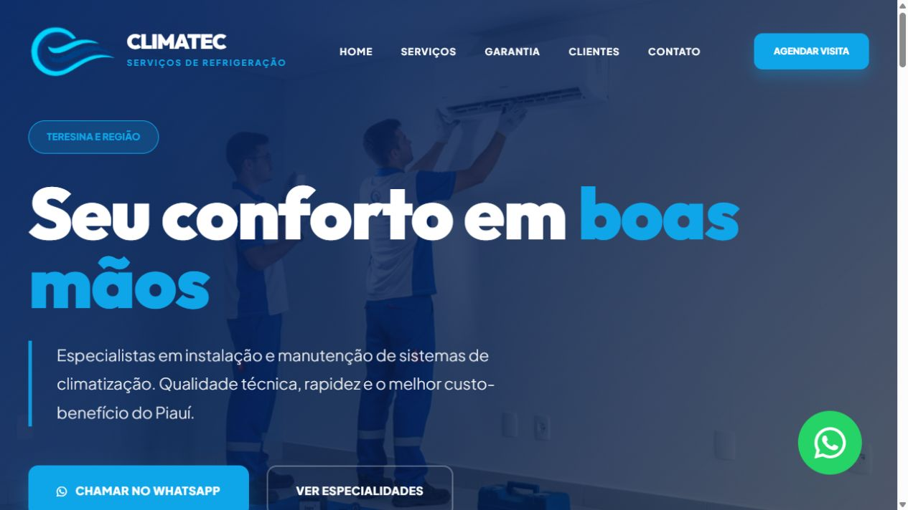

VG.CLAREZA · DESIGN · CONEXÃO
O PRÓXIMO PASSO DO SEU NEGÓCIO
Sua empresa.
Novas possibilidades.
Novas possibilidades.
Vamos conversar ↗
01 / Apresentar02 / Conectar
SUA EMPRESA, BEM APRESENTADA ONLINE
Apresente seu negócio com clareza e facilite o contato de novos clientes. A VG Digital Studio cria sites com visual profissional e uma experiência que funciona no celular e no computador.
Foco em empresas de Teresina–PI e Timon–MA.
01 / SERVIÇOS
Da apresentação da sua empresa a uma campanha específica: cada solução começa com o que seu negócio precisa comunicar.
Um espaço para apresentar sua empresa, seus serviços e as informações que ajudam o cliente a dar o próximo passo.
Uma página focada em uma oferta, serviço ou campanha, com uma mensagem objetiva e um caminho claro para entrar em contato.
02 / PORTFÓLIO
Veja como a apresentação dos serviços e os caminhos de contato se conectam em um site desenvolvido por Victor Freitas.

Refrigeração e climatização em Teresina
Site para apresentar os serviços de instalação e manutenção, com seções organizadas e acesso direto ao WhatsApp da empresa.
Captura do site publicado da Climatec. Conheça o projeto completo no link acima.
03 / SOBRE O STUDIO
Sou Victor Freitas, responsável pela VG Digital Studio. Minha atuação é voltada à criação de sites profissionais e landing pages para empresas.
A proposta é transformar as informações do seu negócio em uma presença digital clara, com visual consistente e acesso fácil aos seus serviços e contatos.
Atendo às necessidades de pequenas e grandes empresas, com foco em Teresina–PI e Timon–MA.
Falar com Victor04 / COMO FUNCIONA
Um processo organizado para alinhar o que sua empresa precisa e acompanhar a construção do site.
Entendemos sua empresa, seu público e o objetivo do projeto.
Definimos as páginas, os conteúdos e as necessidades para preparar a proposta.
Construímos o visual e a estrutura conforme o escopo combinado.
Você confere o projeto e alinhamos os ajustes previstos na proposta.
Verificamos o site e organizamos a entrega conforme o que foi contratado.
05 / PERGUNTAS FREQUENTES
Tem outra dúvida? Converse diretamente com Victor pelo WhatsApp.
Tirar uma dúvidaO site institucional apresenta sua empresa de forma mais ampla, com informações sobre o negócio e seus serviços. A landing page concentra a comunicação em uma oferta, serviço ou campanha específica.
A adaptação ao celular e ao computador faz parte da proposta de criação. A organização dos elementos considera diferentes tamanhos de tela para facilitar a leitura e a navegação.
Conte o que sua empresa faz, qual é o objetivo do site e quais conteúdos ou referências você já possui. Essas informações ajudam a definir o escopo e preparar uma proposta adequada.
Na conversa inicial, avaliamos o que você precisa apresentar e qual ação espera do visitante. Assim, podemos definir se faz mais sentido um site institucional ou uma landing page.
06 / CONTATO
Conte sua ideia, seu momento e o que você precisa. Vamos conversar sobre o projeto.
Solicitar orçamento pelo WhatsApp